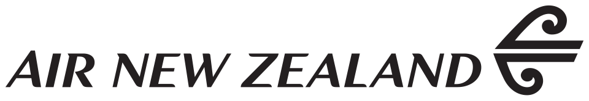

국가별 브랜드
뉴질랜드 브랜드 5
뉴질랜드에서 시작한 브랜드 5개를 로고와 함께 모았습니다. 수록 기준은 검수된 브랜드 설명이나 공식 웹사이트가 일치하는 위키데이터 개체에서 기원 국가가 확인된 경우로 한정했습니다.
다른 국가 보기
국가별 전체 →산업별로는 브랜드·비즈니스 3개, 스포츠·아웃도어 1개, 여행·호스피탈리티 1개 순입니다. 설립연도가 확인된 브랜드는 4개이며 가장 오래된 곳은 1940년, 가장 최근은 2015년에 시작했습니다. 시기별로는 1900~1949년 1개, 1950~1999년 1개, 2000년 이후 2개입니다. 수록 자료로는 로고 이미지 2개, 연혁 타임라인 3개를 갖췄습니다. 이 가운데 2개는 공식 웹사이트가 일치하는 위키데이터 개체로 연결해 두었습니다.
뉴질랜드 브랜드 목록
 카트만두Kathmandu뉴질랜드 · 1987년
카트만두Kathmandu뉴질랜드 · 1987년카트만두(Kathmandu)는 1987년 뉴질랜드 크라이스트처치에서 설립된 아웃도어 의류·장비 브랜드이다.

에어 뉴질랜드Air New Zealand뉴질랜드 · 1940년에어 뉴질랜드(Air New Zealand)는 뉴질랜드의 항공사로, 오클랜드에 본사를 두며 오클랜드 국제공항을 허브 공항으로 이용한다.
TP씽크 패키징
씽크 패키징Think Packaging뉴질랜드 · 2010년씽크 패키징은 2010년 뉴질랜드 오클랜드에서 설립된 구조 패키징 디자인 전문 기업이다.
WP더 울 팟
더 울 팟The Wool Pot뉴질랜드더 울 팟(The Wool Pot)은 뉴질랜드의 친환경 혁신 브랜드로, 100% 재활용 뉴질랜드 양모로 만든 완전 생분해성 화분을 만든다.
AL올마이티
올마이티Almighty뉴질랜드 · 2015년올마이티는 2015년 벤 레나트가 뉴질랜드에서 시작한 유기농 음료 회사다.